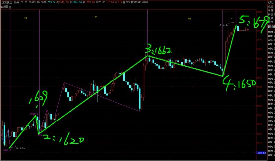
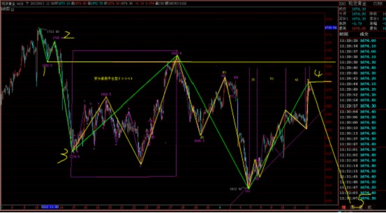

黄金1714后的波浪4（3-3-5）平台调整结束
发布者：admin 发布时间：2012-4-13 14:05:04 阅读：30次
【消息面】
纽纽约联储主席杜德利在经济发展中心就地区及全国经济形势发表演说：未看到任何数据能支持美联储改变维持超低利率直至2014年底；美联储需要考虑第三轮量化宽松的成本和效益，如果经济前景恶化，第三轮量化宽松的益处将增大。
美国劳工部周四(4月12日)公布的数据显示，上周美国初请失业金人数回升，超出预期，并触及今年1月28日当周以来的最高水平，成为了3月非农报告以后又一个显示美国劳工市场疲软的指标。数据显示，美国4月7日当周初请失业金人数上升1.3万人，至38.0万人，预期为35.5万。与此同时，此前一周初请失业金人数修正后为36.7万人，初值为35.7万人。
美国4月7日当周初请失业金人数四周均值上升0.425万人，至36.85万人。此前一周数据修正后为36.425万人，初值为36.175万人。
同时公布的美国3月核心生产者物价指数，+2.9%，预测值为+2.8%，一般而言，当生产者物价指数增幅很大而且持续加速上升时，该国央行相应 的反应是采取加息对策阻止通货膨胀快速上涨，则该国货币升值的可能性增大；反之亦然。关注今日晚间数据：3月消费者物价指数
【技术面】
1612开始上涨5浪，已经有5浪模式，短线回调可看到1665-1655放大，我们可以看到自1714后形成的下跌5浪，

自1714后下跌5浪，还差一跌。浪4运行3-3-5平台调整形，1612后的上升5浪，只是其浪4一个C浪。之后接第5浪，下行空间100美元以上。